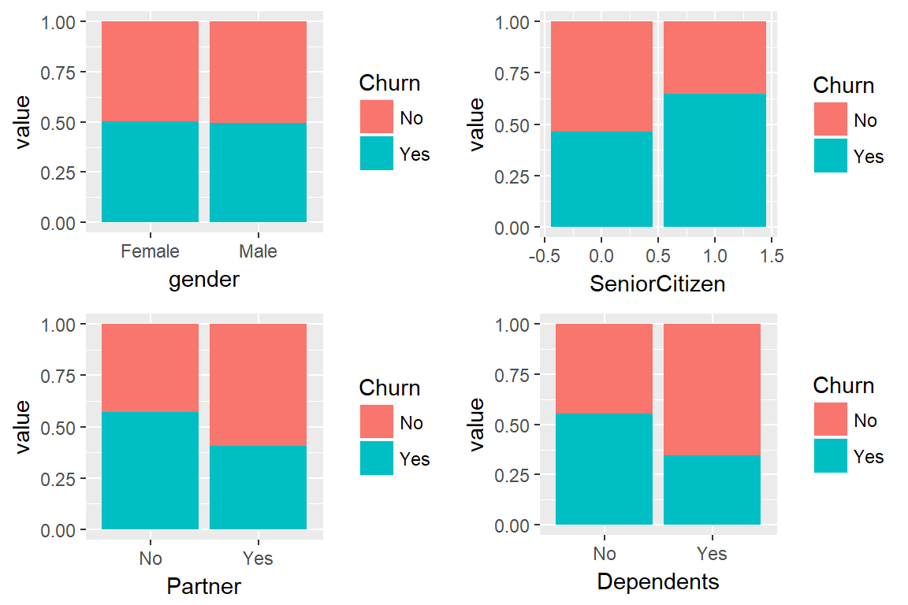
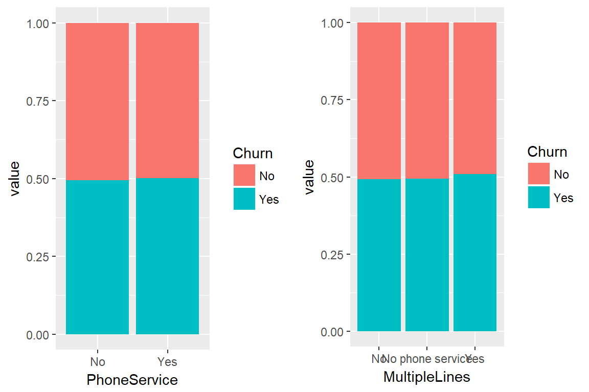
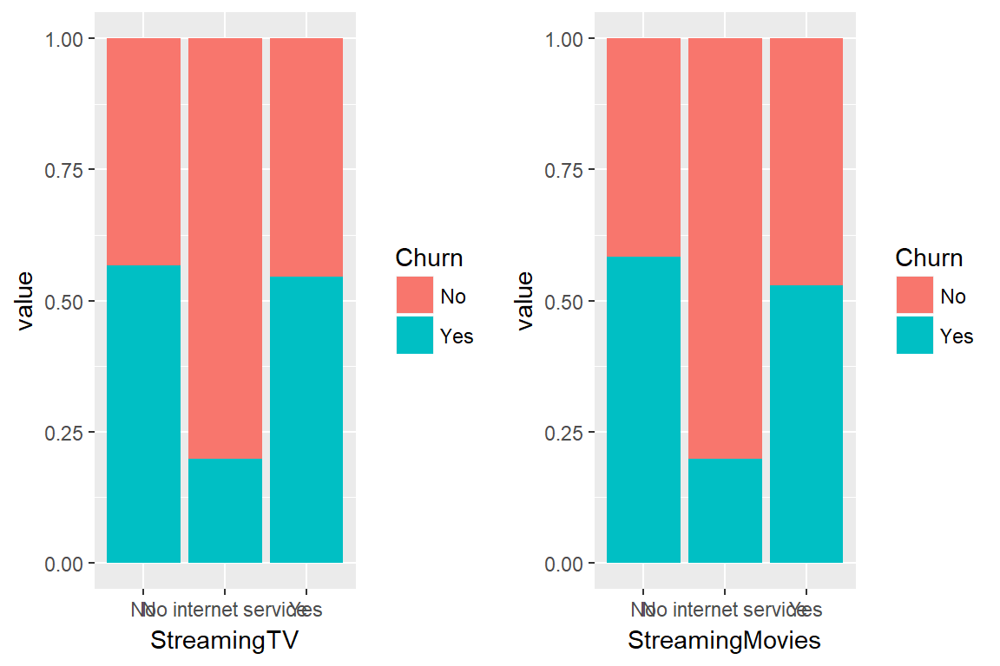
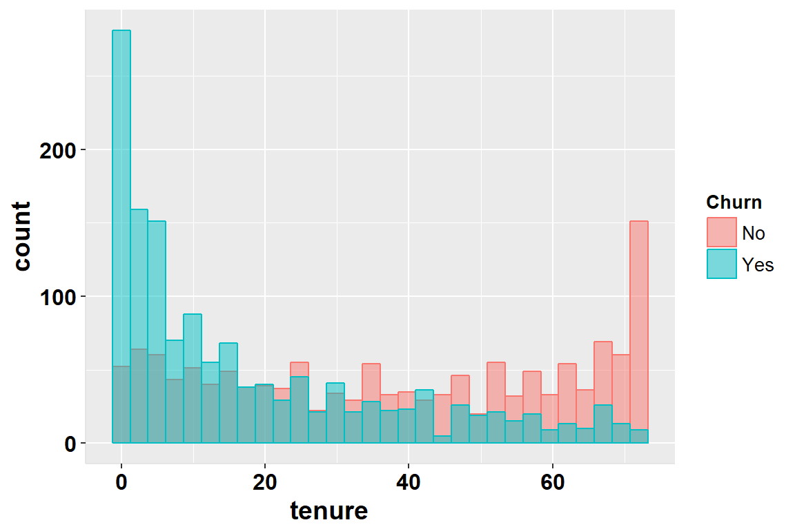
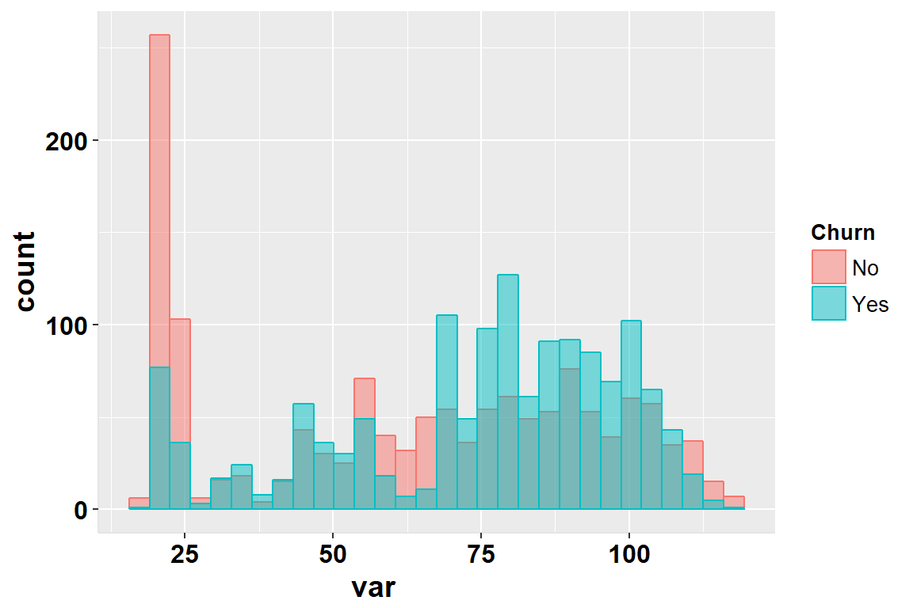

Customer Churn Prediction: An application of Logistic Regression
The IBM Watson Analytics Dataset
The data for this exercise comes from the IBM Watson Analytics website. They have a number of examples of how to use Watson for Business Analytics. In order to do so people would need data, and so they have made public a number of quite interesting sample datasets, which can be found in the following link
This time around, I will be working with their sample dataset for predicting Churn. It contains over 7000 observations of subscribers to a telecommunications company. For each of them, a number of variables are available. Most importantly, the variable Churn reports whether a given subscriber “Churned” in the last month – i.e. they terminated their contaract.
The rest of the variables can be grouped into three categories:
- Demographic Variables:
- gender: Male or Female
- SeniorCitizen: 1 if a Senior Citizen, 0 otherwise.
- Partner: Whether married or not.
- Dependents: If has kids or no.
- Services hired:
- PhoneService: Whether had phone service or not.
- MultipleLines: If had phone services, whether had multiple lines or not.
- InternetService: Whether had Fiber Optics, DSL or No Internet Service
- OnlineSecurity: If had Internet Service, whether had Online Security or not.
- OnlineBackup: If had Internet Service, whether had Online Backup or not.
- DeviceProtection: If had Internet Service, whether had Online Security or not.
- TechSupport: If had Internet Service, whether had Device Protection or not.
- StreamingTV: If had Internet Service, whether had Streaming TV or not.
- StreamingMovies: If had Internet Service, whether had Streaming Movies or not.
- Account Information:
- tenure: length of time being a subscriber
- Contract: Whether month to month, one or two year contract.
- PaperlessBilling: Whether had Paperless Billing or not.
- PaymentMethod: Whether Electronic Check, Mailed Check, Automatic Bank transfers or Automatic Credit Card.
- MonthlyCharges: Money payed in the last month.
- TotalCharges: Money payed in total
I will start the analysis by demonstrating the data is not balanced and showing how to solve that problem. Then, since I am not very familiar with this dataset, I will proceed by exploring it in search of variables that might be predictive of whether a customer will leave or not. Afterwards, I will transform the data for analysis; mainly by creating dummy variables and recoding when needed. Finally, I will estimate a Logistic Regression model and evaluate its ability to predict accurately whether a subscriber did in fact churn or not in a dataset different to the one where it was “trained” in.
Balancing the data:
I start the analysis by taking a look at the main variable of interest; whether subscribers churned in the past month. More specifically, the following bar chart explores the number of people who left the company versus the number who stayed. It shows that the number of people who left the company is less than half of those who stayed. This is called an Class Imbalance Problem, and it can cause the prediction to be skewed in favor of the predominant class. In this case, this means a bias in favor of predicting people didn’t churn, when they in fact did; a type 2 error, a false negative.
ggplot2.barplot(data = data, xName = "Churn")Resolving this class imbalance problem is a priority. In this case I handle it by under-sampling the predominant class; where the subscriber did not churn. I take a random sample of this class of size equal to the number of people who did churned and combine the two to form one dataset where 50% churned and the rest did not.
balanced_df <-
data %>%
filter(Churn == "No") %>%
sample_n(nrow(filter(data, Churn=="Yes"))) %>%
rbind(filter(data,Churn=="Yes"))An important practice in Data Science to avoid over fitting is Cross-Validation. This implies training the model on a dataset and validating its predictive accuracy in another dataset. This is only useful because often times there is no theoretical guidance for model selection, but in theory a theoretically sound model should work just as well in the training and validation dataset (although, not necessarily the other way around – a predictive model is not necessarily theoretically sound.)
I now divide the dataset into training and validate, where training contains 75% of the observations in the original balanaced data.
data_train <-
balanced_df %>%
filter(Churn == "Yes") %>%
sample_frac(size = .75) %>%
bind_rows(
balanced_df %>%
filter(Churn =="No") %>%
sample_frac(size = .75) )
data_valid <-
balanced_df %>%
filter(!customerID %in% data_train$customerID)Exploratory Analysis
Using the training data, I proceed by exploring the relationships between the different variables with Churn. I start with the demographic variable, then explore the services and finally the account information.
Demographics:
A good way to visually explore whether categories in a variable imply a higher rate of churn is by using a Stacked Percent Chart. On the x axis are the categories of the variable, and on the y axis both categories add up to a 100%, and so they inside represents the share of subscribers that did, and did not churn. If a variable is related to churn, we should see a higher percentage of churners.
g1 <- data_train %>%
select(Churn, gender) %>%
group_by(Churn, gender) %>%
summarise(value = n()) %>%
ggplot(aes(fill=Churn, y=value, x=gender)) +
geom_bar( stat="identity", position="fill")
g2 <- data_train %>%
select(Churn, SeniorCitizen) %>%
group_by(Churn, SeniorCitizen) %>%
summarise(value = n()) %>%
ggplot(aes(fill=Churn, y=value, x=SeniorCitizen)) +
geom_bar( stat="identity", position="fill")
g3 <- data_train %>%
select(Churn, Partner) %>%
group_by(Churn, Partner) %>%
summarise(value = n()) %>%
ggplot(aes(fill=Churn, y=value, x=Partner)) +
geom_bar( stat="identity", position="fill")
g4 <- data_train %>%
select(Churn, Dependents) %>%
group_by(Churn, Dependents) %>%
summarise(value = n()) %>%
ggplot(aes(fill=Churn, y=value, x=Dependents)) +
geom_bar( stat="identity", position="fill")
ggplot2.multiplot(g1,g2,g3,g4, cols = 2)
From the first plot on the top left, gender does not appear to be related to the churn rate – men are no more likely to churn than women. On the top right, it appears that Senior Citizens are more likely to churn than non senior citizens. For the two plots on the bottom, single people, and those without kids appear to be less likely to churn.
A number of warnings are required at this point. Normally, inside a telecommunications company, it is well known that some people churn for legitimate reasons – because they can’t pay, leave the country or die. I would have to assume this is the case here, and the data is for what is call “voluntary churn” – people who decided to cancel their contract and were not forced into doing so. If this data is contaminated with non-voluntary churn, then the exercise becomes trivial and, for example, senior citizens are more likely to churn because they die. I will proceed assuming that’s not the case, and they churn for a commercially relant reason.
Something else to consider is the interactions between several variables. In this case, notice that someone can be married and have kids, or not. The same goes for singles, who may very well have kids.
To see this, consider the following graph, where the combination of whether the subscriber is married and/or has kids is on the x axis.
data_train %>%
select(Churn, Partner, Dependents) %>%
mutate(var = paste(Partner,Dependents)) %>%
select(-Partner,-Dependents) %>%
mutate(var = recode(var, "No No" = "Single, No Kids", "No Yes" = "Single with kids", "Yes No" = "Married, No kids", "Yes Yes" = "Married with Kids")) %>%
group_by(Churn, var) %>%
summarise(value = n()) %>%
ggplot(aes(fill=Churn, y=value, x=var)) +
geom_bar( stat="identity", position="fill") 
Indeed, the people are least likely to churn when they are married with kids, and the most likely to do so if they are single and without kids. Further, having kids appears to be a stronger deterrent to churning behavior because singles with kids are less likely to churn than married people without kids.
This is the kind of interactions that is really hard to pin-point using exploratory techniques like visual analysis. Eventually, a model is required to consider all of these factors jointly.
Services Hired:
In this group, I start by looking at the Phone Services and the multiple lines variables. It is evident that there is not much difference between the groups in this case. Subscribers with Phone Service are slightly more likely to churn, but that’s probably not a statistically significant result. The same can be said for whether they have Multiple lines. Those with more likes appear to be slightly more likely to churn relative to those without phone service, followed by those with only one line.
g1 <- data_train %>%
select(Churn, PhoneService) %>%
group_by(Churn, PhoneService) %>%
summarise(value = n()) %>%
ggplot(aes(fill=Churn, y=value, x=PhoneService)) +
geom_bar( stat="identity", position="fill")
g2 <- data_train %>%
select(Churn, MultipleLines) %>%
group_by(Churn, MultipleLines) %>%
summarise(value = n()) %>%
ggplot(aes(fill=Churn, y=value, x=MultipleLines)) +
geom_bar( stat="identity", position="fill")
ggplot2.multiplot(g1,g2, cols = 2)
The picture is more informative with the Internet Service. People without Internet Service are a lot less likely to Churn. Of those with Internet, people with Fiber Optics are more likely to churn than those with ADSL.
data_train %>%
select(Churn, InternetService) %>%
group_by(Churn, InternetService) %>%
summarise(value = n()) %>%
ggplot(aes(fill=Churn, y=value, x=InternetService)) +
geom_bar( stat="identity", position="fill") A number of features are available as additions to the internet service. Among people with Internet, it seems that not having one of these features on top of the Internet plan increases the likelihood of churning. Perhaps it is because they are more sawy; they know more about Internet Services and that they don’t need protection or tech support. This goes well with the narrative that Fiber Optic, which should be a more expensive service, increases churn.
Exploring these things is a job on its own. However, they matter little for actually predicting churn. I will focus on the latter task for now.
g1 <- data_train %>%
select(Churn, OnlineSecurity) %>%
group_by(Churn, OnlineSecurity) %>%
summarise(value = n()) %>%
ggplot(aes(fill=Churn, y=value, x=OnlineSecurity)) +
geom_bar( stat="identity", position="fill")
g2 <- data_train %>%
select(Churn, OnlineBackup) %>%
group_by(Churn, OnlineBackup) %>%
summarise(value = n()) %>%
ggplot(aes(fill=Churn, y=value, x=OnlineBackup)) +
geom_bar( stat="identity", position="fill")
g3 <- data_train %>%
select(Churn, DeviceProtection) %>%
group_by(Churn, DeviceProtection) %>%
summarise(value = n()) %>%
ggplot(aes(fill=Churn, y=value, x=DeviceProtection)) +
geom_bar( stat="identity", position="fill")
g4 <- data_train %>%
select(Churn, TechSupport) %>%
group_by(Churn, TechSupport) %>%
summarise(value = n()) %>%
ggplot(aes(fill=Churn, y=value, x=TechSupport)) +
geom_bar( stat="identity", position="fill")
ggplot2.multiplot(g1,g2,g3,g4, cols = 2)For the case of Streaming TV and Streaming Movies, it appears these variables do not impact the likelihood to Churn after controlling for people who have Internet or not.
g1 <- data_train %>%
select(Churn, StreamingTV) %>%
group_by(Churn, StreamingTV) %>%
summarise(value = n()) %>%
ggplot(aes(fill=Churn, y=value, x=StreamingTV)) +
geom_bar( stat="identity", position="fill")
g2 <- data_train %>%
select(Churn, StreamingMovies) %>%
group_by(Churn, StreamingMovies) %>%
summarise(value = n()) %>%
ggplot(aes(fill=Churn, y=value, x=StreamingMovies)) +
geom_bar( stat="identity", position="fill")
ggplot2.multiplot(g1,g2,cols=2)
Account Information:
Account Information in general appears to be very relevant to churn prediction. Starting with the contract formats, month to month subscribers are much more likely to churn, followed by one-year subscribers and the 2-year contract has the least churn.
Depending on how the data was construncted, this is quite trivial. If people cannot leave until their 1 or 2 year contract is concluded, then these variables are only stating that fact. There might be penalties associated with leaving a contract which are much softer for the 1 year than the 2 year contracts, which would explain their respective churn rates.
It is a lot more interesting to explore churn behavior among people whom are not in a contract and are free to leave. That way, the company can gain a significant differential advantage because they offer the flexibility of not requiring a contract; which should be very attractive to customers.
data_train %>%
select(Churn, Contract) %>%
group_by(Churn, Contract) %>%
summarise(value = n()) %>%
ggplot(aes(fill=Churn, y=value, x=Contract)) +
geom_bar( stat="identity", position="fill") I now explore the tenure of subscribers. Since this is a continuous variable, it is best to examine a Histogram instead. In the following graph the histogram for the variable tenure is plotted for those who churned in the last month superimposed over those who did not. The picture is clear. People who churn have been with the company for less time than those who don’t.
data_train %>%
select(Churn, tenure) %>%
ggplot2.histogram(xName = "tenure", groupName = "Churn")
Looking at the next variable, subscribers who had Paperless Billing were more likely to churn.
Surprisingly, people who pay with Electronic Checks or Mailed Checks appear to be more likely to churn relative to those who pay automatically with either credit card or bank transfer.
g1 <- data_train %>%
select(Churn, PaperlessBilling) %>%
group_by(Churn, PaperlessBilling) %>%
summarise(value = n()) %>%
ggplot(aes(fill=Churn, y=value, x=PaperlessBilling)) +
geom_bar( stat="identity", position="fill")
g2 <- data_train %>%
select(Churn, PaymentMethod) %>%
group_by(Churn, PaymentMethod) %>%
summarise(value = n()) %>%
ggplot(aes(fill=Churn, y=value, x=PaymentMethod)) +
geom_bar( stat="identity", position="fill")
ggplot2.multiplot(g1,g2, cols = 1)Monthly Charges:
While Churners are more likely to exhibit higher values of Monthly Charge, there is still significant overlap on the lower end.
data_train %>%
select(Churn, var = MonthlyCharges) %>%
ggplot2.histogram(xName = "var",groupName = "Churn")
Total Charges:
Once again the difference does not seem to be statistically significant. However, it is much stronger in this case. There is also many extreme values as evidenced by the dots at the top of the Churners box.
It appears that The median in the Churners distribution is significantly closer to zero. Whereas for the Non Churners it is definitely bigger than that. Further, the tails of the distribution are much thicker for nonchurners.
data_train %>%
select(Churn, var = TotalCharges) %>%
group_by(Churn, var) %>%
summarise(value = n()) %>%
ggplot2.histogram(xName = "var",groupName = "Churn")Features:
After exploring the data, we can decide on the feature that might be predicitve of Churn. At first sight, we can say that gender, phone service,
library(dummies)
df <-dummy.data.frame(select(data_train,-customerID), dummy.classes = "factor")
mdl <- glm(ChurnYes~tenure + genderMale + SeniorCitizen + PartnerYes + DependentsYes, data = df, family = "binomial")
predict <- as.numeric(ifelse(predict(mdl, newdata = df, type = "response")>0.5,1,0))
Observed <- df$ChurnYes
confusionMatrix(data = predict,reference = Observed)## Confusion Matrix and Statistics
##
## Reference
## Prediction 0 1
## 0 897 344
## 1 505 1058
##
## Accuracy : 0.6972
## 95% CI : (0.6798, 0.7142)
## No Information Rate : 0.5
## P-Value [Acc > NIR] : < 2.2e-16
##
## Kappa : 0.3944
## Mcnemar's Test P-Value : 3.992e-08
##
## Sensitivity : 0.6398
## Specificity : 0.7546
## Pos Pred Value : 0.7228
## Neg Pred Value : 0.6769
## Prevalence : 0.5000
## Detection Rate : 0.3199
## Detection Prevalence : 0.4426
## Balanced Accuracy : 0.6972
##
## 'Positive' Class : 0
##